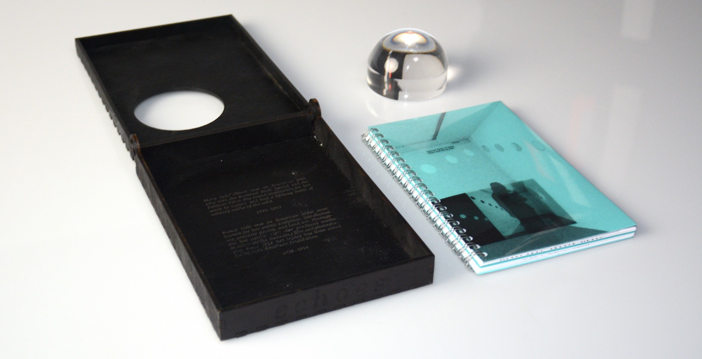
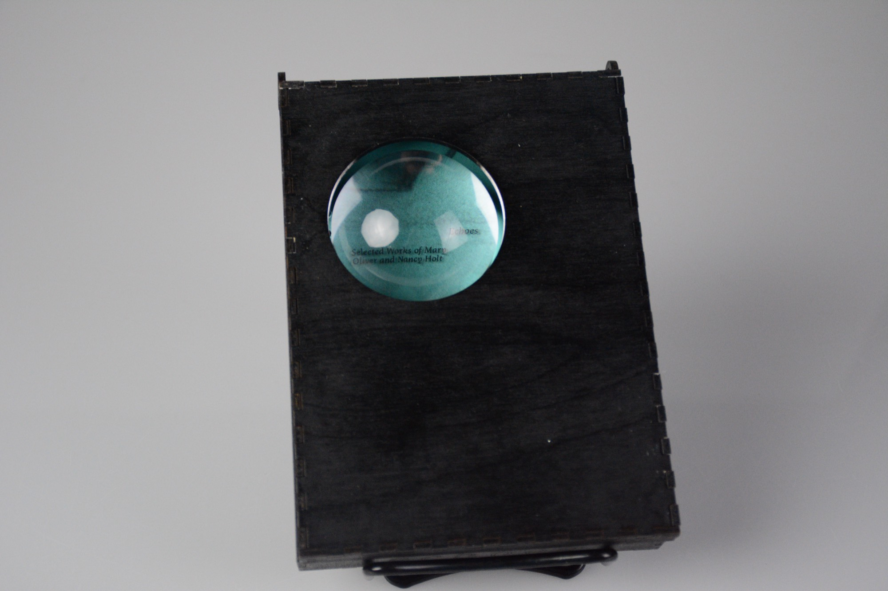
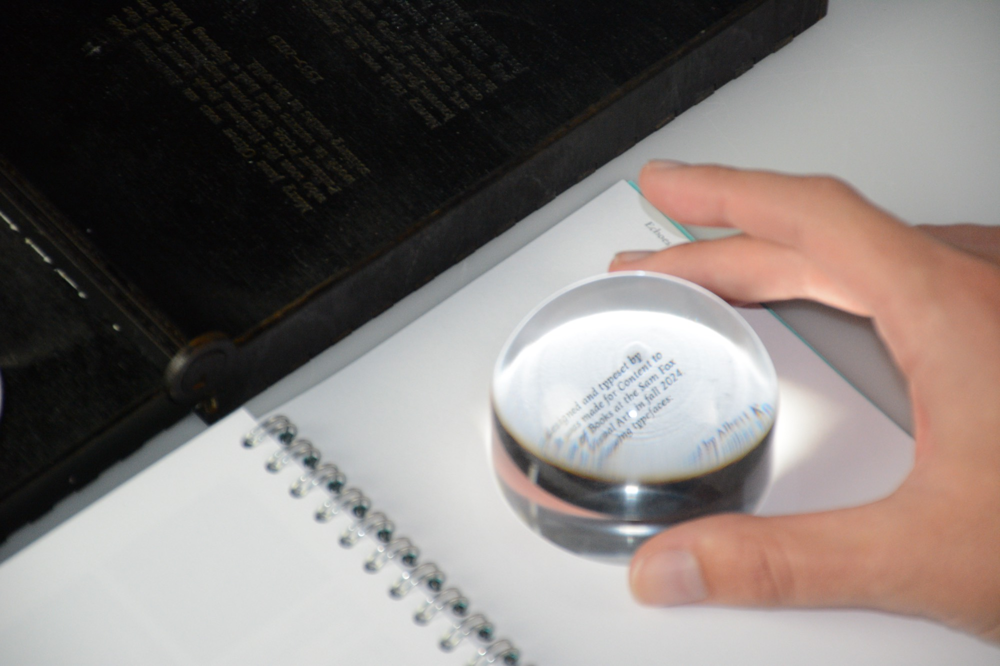
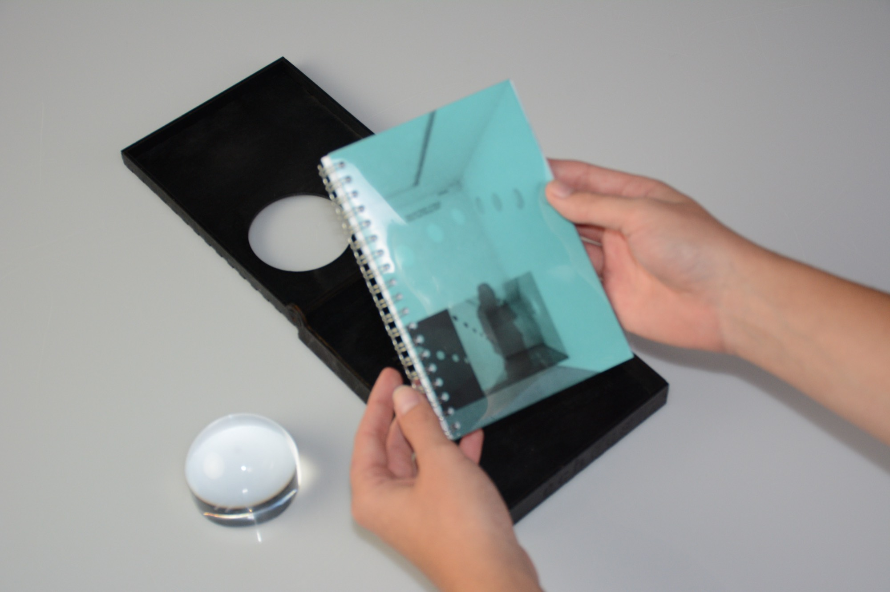

ECHOES

A study in sequence, this book combines images of land artist Nancy Holt’s oeuvre with the poetry of Mary Oliver. The book and its accompanying magnifier are contained within a black hinged bookbox, meant to evoke Holt’s series “Locators.” Oliver’s poetry is displayed in three different type sizes, one of which requires the reader’s use of the magnifier.
The title of the book is engraved on the side of the box closest the reader, while biographies of Holt and Oliver are engraved on the bottom of the box. Three paper stocks are used in the book. Holt’s indoor works are shown on the white stock, and her outdoor works are shown on the peacock blue stock.
The title of the book is engraved on the side of the box closest the reader, while biographies of Holt and Oliver are engraved on the bottom of the box. Three paper stocks are used in the book. Holt’s indoor works are shown on the white stock, and her outdoor works are shown on the peacock blue stock.
Joy is not made to be a crumb.


